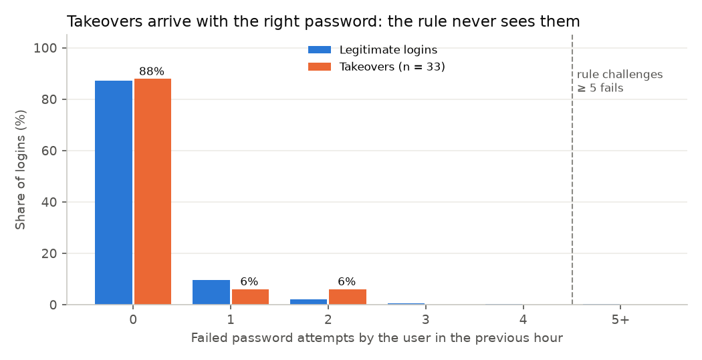
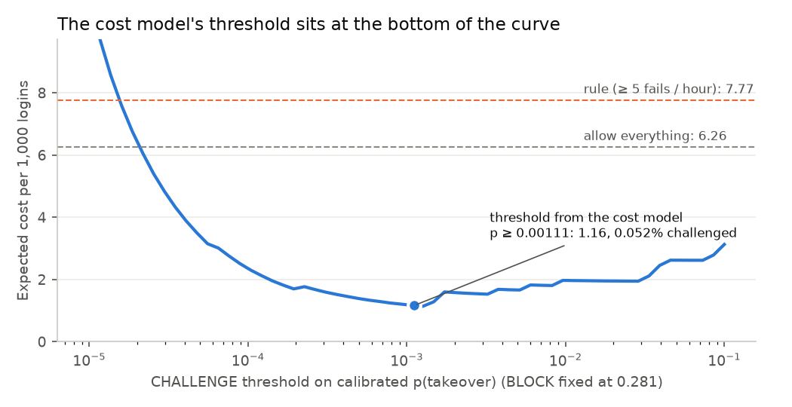

De-Riddled scores every login attempt for account-takeover risk and returns ALLOW, CHALLENGE (one-time code) or BLOCK in a few milliseconds, with the top three reasons. Built on 31 million logins, compared honestly against rules and statistics, served by a real API, and paired with a GenAI layer that briefs analysts, answers their questions and attacks the model.
Validation window, Aug–Sep 2020: 2.63M logins, 33 confirmed takeovers. Every policy decides every login, so the comparison is paired.
| Policy | Legit challenged | Takeovers stopped | Cost / 1,000 logins |
|---|---|---|---|
| Allow everything | 0 | 0 / 33 | 6.26 |
| Rule: challenge after 5 failed passwords in an hour | 0.30% | 0 / 33 | 7.77 |
| Likelihood ratio (Freeman et al.), same budget | 0.052% | 15 / 33 | 3.96 |
| De-Riddled | 0.051% | 28 / 33 | 1.66 |

An offline pipeline that builds and judges the model, and an online service that applies it. The only bridge between them is the promoted model and its thresholds.
Offline (DuckDB) Online (FastAPI)
RBA CSV → Parquet → features.sql ─┐ replay.py → POST /score
├→ baselines state.py (online features,
├→ reputation held to the SQL by
├→ XGBoost a parity test)
└→ calibration → score, action, top 3 reasons
+ cost-model ↓
thresholds SQLite decision log
│ ↓
└─ MLflow ─→ Streamlit dashboard → analyst labels
registry ↑
LLM narrator + SQL agent39 features in DuckDB SQL: velocity, novelty against the account's own successful logins, population frequencies, IP and subnet activity, a likelihood-ratio score and network takeover reputation. Every feature uses only data from before the login, enforced by a leakage test. Reputation counts a takeover only once it would have been confirmed, 7 days later.
XGBoost with monotone constraints on takeover history, sigmoid-calibrated. Thresholds come from a cost model (missed takeover 500, OTP 0.5, wrongly blocked user 20), not by hand: CHALLENGE at p ≥ 0.00111, BLOCK at p ≥ 0.28.
A FastAPI /score endpoint keeps per-account state in memory and returns the score, action, top three TreeSHAP reasons and model version. It fails open after 200 ms. A parity test proves its features identical to the SQL ones.
An MLflow registry with a champion alias for rollback, PSI drift monitoring on the model output, and a Streamlit dashboard with an alert queue, case view, label buttons and a feedback loop into network reputation.
| Step | Takeovers in the riskiest 1% | Outside the main campaign |
|---|---|---|
| Static rule | 0 / 33 | 0 / 14 |
| Likelihood ratio alone | 22 / 33 | 8 / 14 |
| User behaviour (19 features) | 23 / 33 | 9 / 14 |
| + population frequencies | 30 / 33 | 11 / 14 |
| + IP–account graph, likelihood feature, anomaly score | 30 / 33 | 11 / 14 |
| + delayed network / IP takeover reputation | 32 / 33 | 13 / 14 |
| Final model (no country features, monotone reputation) | 33 / 33 | 14 / 14 |

| Finding | Fix | Effect |
|---|---|---|
| Genuine Romanian users challenged at 131× the average rate | Removed country-reputation features | Their friction fell from 4.0% to 1.0%; every takeover still in the top 1% |
| Confirming a takeover in the dashboard lowered other scores on the same network | Monotone constraints on takeover history | Scores can only rise with history; better on all three seeds |
| "Retraining noise" was really rows loading in a different order | Ordered the loader | Same seed is now bit-identical |
| Online and offline features disagreed on float timestamps | Integer-microsecond timestamps | Identical on ~382,000 feature values |
An LLM wrote five attack campaigns as simulator settings. A deterministic generator turned them into synthetic logins on real accounts, mixed into two real days and scored by the same code the API runs.
The previous champion stopped 2 of 300 synthetic takeovers. "New country for this account" counted every earlier attempt, so an attacker's own failed guesses made their location look familiar by the time they got in. The real takeovers in the data almost never fail first, so history could not reveal it.
The fix measures novelty against the account's successful logins only.
| Campaign | Before | After |
|---|---|---|
| Noisy credential stuffing from attack-listed networks | 0 / 3 | 35 / 51 |
| Rented servers abroad at night | 2 / 9 | 43 / 47 |
| Residential proxies abroad, one failure, hours apart | 0 / 0 | 0 / 2 |
| Residential proxies in the victim's country | 0 / 0 | 0 / 0 |
| Victim's own ISP and device, copied | 0 / 0 | 0 / 0 |
| Total of 300 (seed 0 / seed 1) | 2 / 12 | 78 / 100 |
The trade-off: 28 instead of 31 real validation takeovers stopped, at the same friction. It was adopted because the old model could be beaten by any attacker who fails once. Attackers that copy the victim's country, network and device stay invisible to login metadata; that needs MFA or behavioural signals.
The LLM never decides ALLOW, CHALLENGE or BLOCK. It explains, answers and attacks; the calibrated model decides. Account IDs and IPs are salted-hashed before anything leaves the machine.
Claude Haiku turns each alert's evidence into 4–6 cited claims and a suggested next step. Code removes any claim whose numbers are not in the evidence it cites.
On 56 alerts no prompt was tuned on: 93.4% strict / 100% lenient faithfulness, 0 unsupported claims (AI-judged, blind; human spot-check pending). About $1 per 1,000 alerts.
Answers analysts' questions with SQL over a hashed, read-only database: one SELECT, 30 s timeout, 200-row cap, no file access.
Scored by comparing result tables: 27/30 before tuning, then 30/30 on the tuned set and 9–10/10 on held-out questions. $0.77 per 1,000 questions.
| Narrator prompt | Alerts | Strict faithfulness | Unsupported claims | Recommendations reasonable |
|---|---|---|---|---|
| v3 | 100 (dev) | 79.1% | 26 | 75% |
| v4 | 100 (dev) | 88.8% | 11 | 85% |
| v4 | 56 (held out) | 91.2% | 5 | 84% |
| v5 (live) | 56 (held out) | 93.4% | 0 | 86% |
Each comparison used the same alerts, judges who could not see which version wrote what, and a paired case bootstrap. v3 → v4 gained +9.6 points (CI 6.3–12.8); v4 → v5's strict gain (+2.2) is within noise, but it removed every claim that contradicted the evidence.
Python 3.11 · DuckDB · Parquet · XGBoost · scikit-learn · SHAP · NetworkX · FastAPI · SQLite · MLflow · Streamlit · Plotly · Docker · Anthropic Claude (Haiku, Sonnet) · Pydantic · pytest (45 tests)